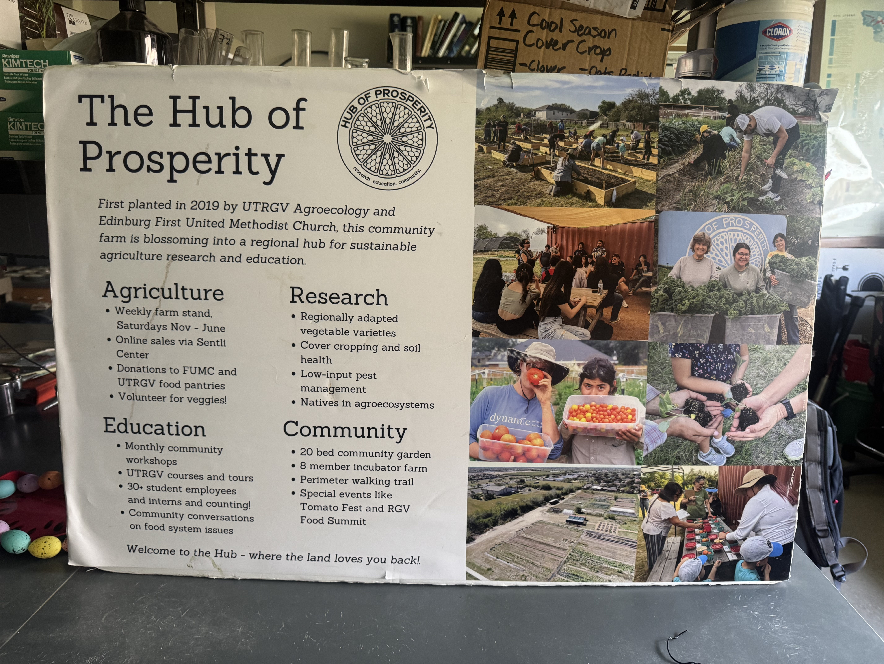
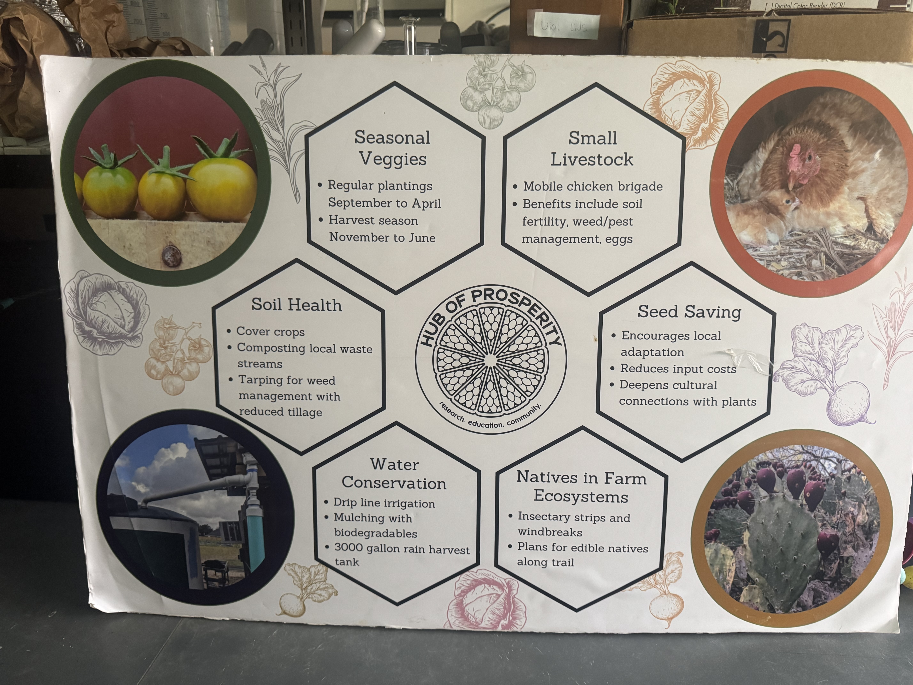
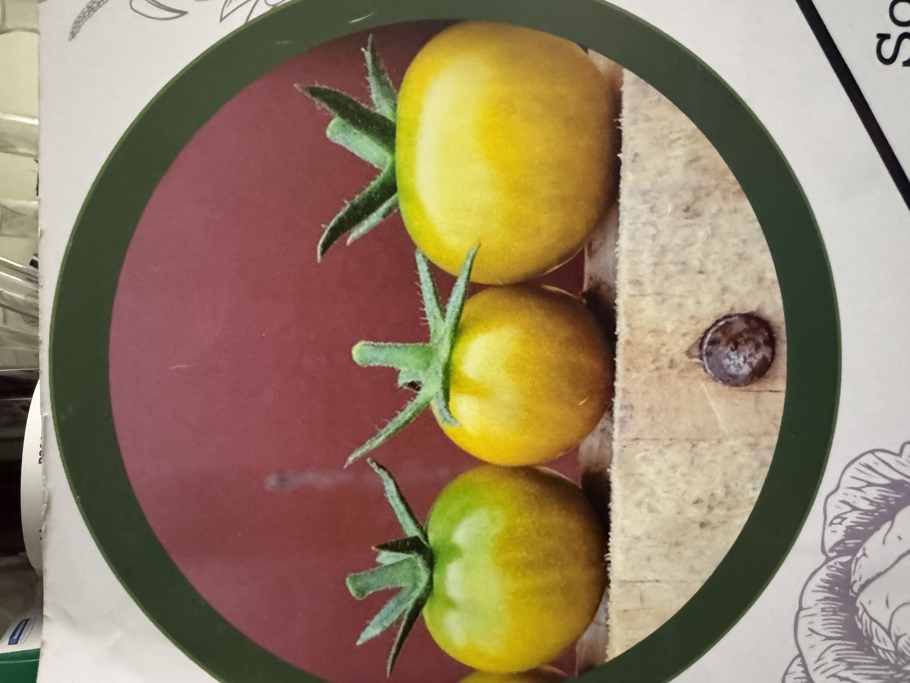
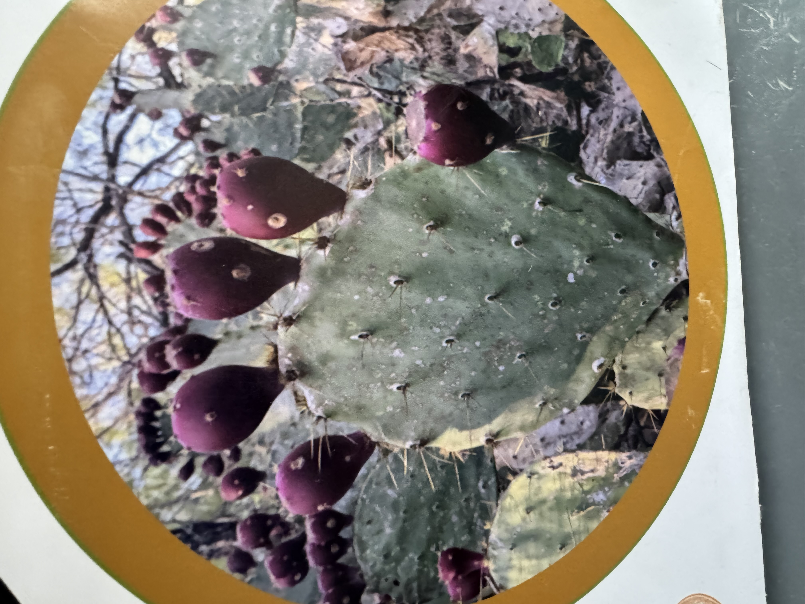
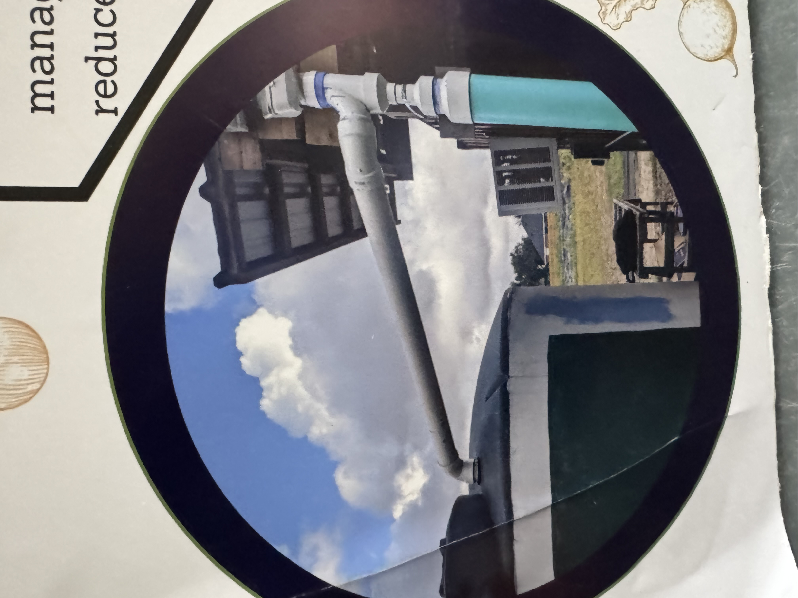
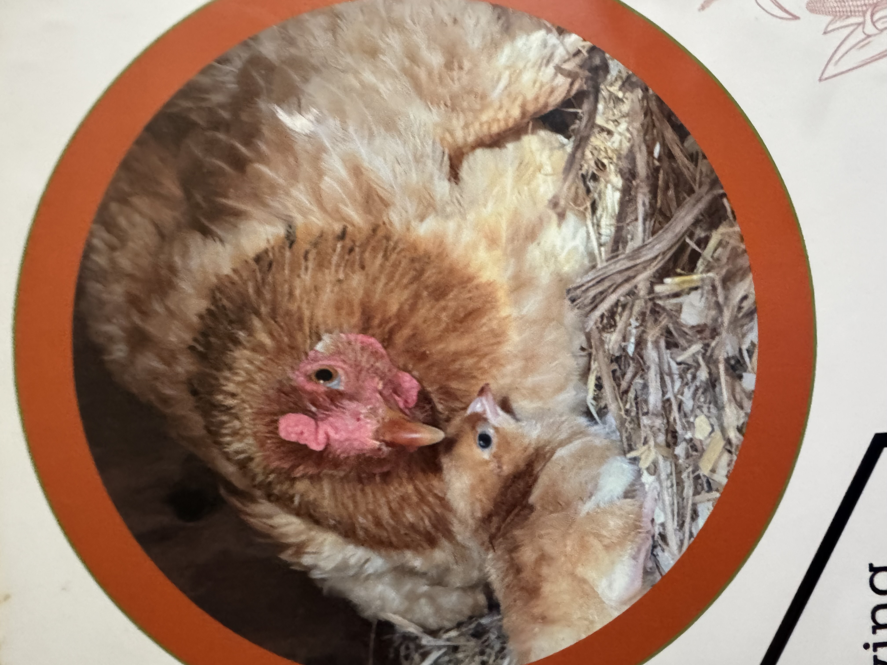
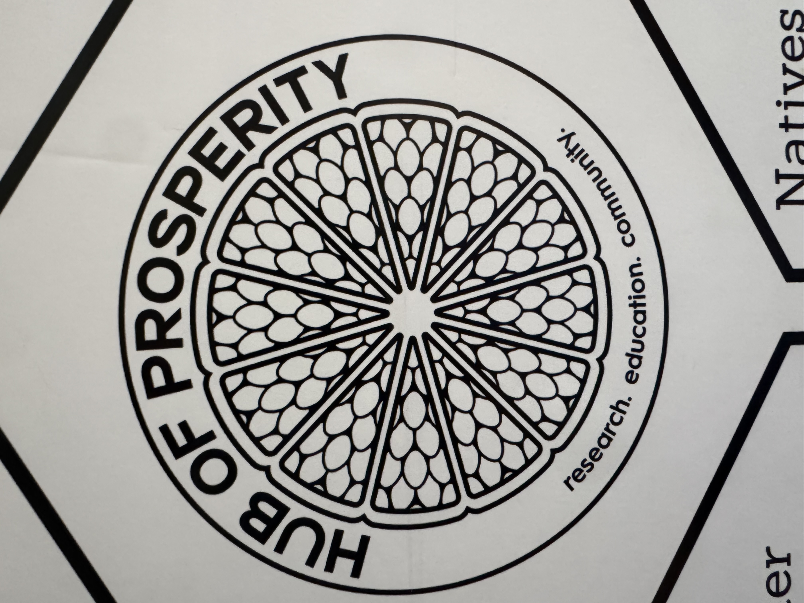
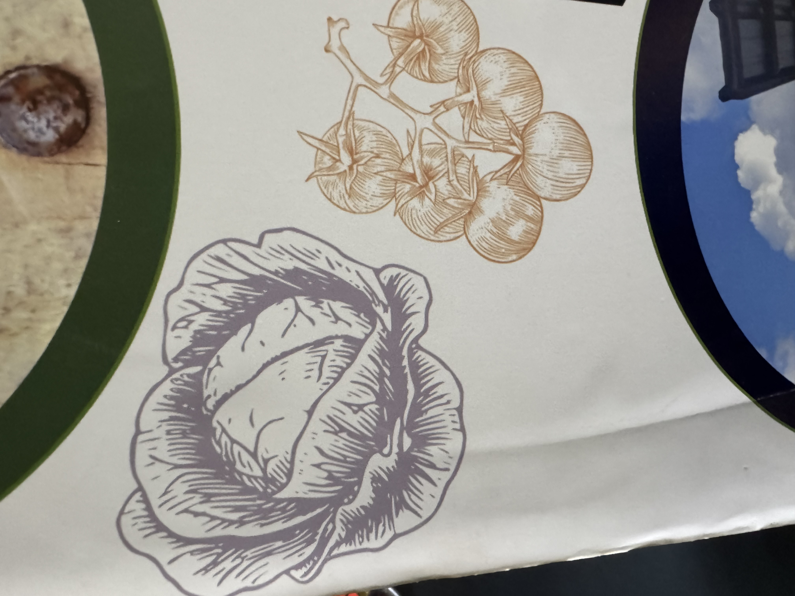

Led by Dr. Alexis Racelis (Houston Endowed Chair for Science & Technology), our laboratory advances participatory action research, subtropical soil health, silvopasture microclimates, and regional food sovereignty throughout the Rio Grande Valley.

Echoing the scientific rigor of the UTRGV College of Sciences, our research spans the continuum from soil microbial ecology and entomological biocontrol to regional agroforestry and civic food systems.
Investigating cover crop mixes (Cowpea, Sunn Hemp), mycorrhizal fungal colonization, and active soil organic carbon (POXC) accumulation under high temperatures and water constraints.
Integrating small ruminants and yearling cattle into shaded tree canopy corridors to provide thermal comfort, improve animal welfare, and biological weed suppression via flash-grazing.
Deploying native tree canopy (Montezuma Cypress, Live Oak, Pecan) to cool schoolyards, mitigate urban heat islands, and assess ecosystem service valuations with the Texas Trees Foundation.
Championing bilingual beginning farmer training, land access equity, Community Fridge mutual aid networks, and policy partnerships with the USDA Equity Commission across South Texas.
Recent journal articles, technical reports, and peer-reviewed studies authored by Dr. Alexis Racelis and lab members.
Our team comprises postdoctoral fellows, M.S. graduate thesis researchers, undergraduate SAFS fellows, and farm managers working collaboratively.

Dr. Racelis is a prominent agroecologist leading participatory research in soil health, cover cropping, urban forestry, and resilient food systems. He directs the Agroecology and Resilient Food Systems Laboratory and the Hub of Prosperity at UTRGV. In 2024, Dr. Racelis was honored by the White House's Domestic Policy Council as one of 14 national "Rural Innovators" and served on the USDA Equity Commission’s Subcommittee for Agriculture.
Our living laboratories serve as hands-on experimental research grounds, instructional spaces, and community hubs across the Rio Grande Valley.
A premier 5-acre urban research farm featuring organic crop rows, silvopasture paddocks, a 3,000-gallon rainwater harvesting system, and a weekly Saturday community market.

1st USDA Organic in TXA 7,500 sq. ft. USDA-certified organic facility featuring a climate-controlled greenhouse with an automated water wall, misters, and fans, plus a shade house, tool shed, and 15 community raised beds managed by student organizations and community members.

Urban Ecology CenterA flagship partnership with the City of McAllen advancing urban forestry, Miyawaki "Tiny Forests", native Thornscrub restoration, ecotourism, and regional environmental education.
Since 2019, Dr. Alexis Racelis and the Agroecology & Resilient Food Systems Lab have secured and directed over $3.8M+ in federal, foundation, and state research grants supporting student fellowships, beginning farmer incubation, and living laboratory infrastructure across South Texas.
Total project award value across research initiatives
External federal & foundation awards as Lead PI / Co-PI
Grant awards & living lab field initiatives supported
Figures show full award values supporting UTRGV agroecology research, Conservation Innovation Trials (CIT), beginning farmer incubation, and graduate student cohorts.
Major USDA-NRCS On-Farm Conservation Innovation Trials (CIT) conducting multi-year participatory research with regional farmers across the Lower Rio Grande Valley. Evaluated cover crop varieties, reduced-tillage soil biology, and soil organic carbon dynamics while mentoring multi-year student cohorts (CIT Cohort 1 & Middle Cohort).
Comprehensive bilingual training, land access incubation, and agribusiness financial benchmarking for Tier 1 (0–1 yr) and Tier 2 beginning farmers. Directs field incubation, equipment access, and market development at the Hub of Prosperity.
Multi-year foundation grant supporting Hub of Prosperity living lab operations, Community Fridge networks, SNAP and Double Up Food Bucks incentive expansion, and regional youth food literacy programs.
Established the B.S. in Sustainable Agriculture and Food Systems (SAFS) degree pathway, certified organic greenhouse research infrastructure, and funded over 40 undergraduate and M.S. student research assistantships.
Perpetual research endowment supporting long-term soil organic carbon sequestration monitoring, participatory action research with regional farmers, and graduate student research stipends.
Quantifying native tree canopy growth rates, 3D solar shade microclimate cooling, and i-Tree ecosystem benefit valuations (carbon, stormwater, avoided cooling energy) across regional elementary and high school campuses.
Advancing urban forestry models, K-12 STEM pipelines, viewshed greenery line-of-sight metrics, and native wildlife biodiversity monitoring at Quinta Mazatlán in McAllen, TX.
Field screening host specificity, parasitism rates, and impact of insect biological control agents on invasive riparian Giant Reed and agricultural nightshade weeds.
Dr. Racelis's laboratory collaborates closely with faculty across the School of Earth, Environmental, and Marine Sciences (SEEMS) and the School of Integrative Biological and Chemical Sciences (SIBCS).
We are actively recruiting motivated graduate students (M.S. in Agricultural, Environmental, and Sustainability Sciences) and undergraduate research fellows (B.S. in Sustainable Agriculture and Food Systems / Biology) passionate about agroecology, soil health, GIS, and community food systems.
Prospective graduate students should email Dr. Alexis Racelis with the following materials:
Undergraduate UTRGV students interested in work-study or research credit should stop by the Hub of Prosperity or email us directly.
Access our full suite of interactive GIS mapping tools, 3D microclimate simulators, grant trackers, and field sensor telemetry platforms.
Unified cross-grant operations hub integrating W.K. Kellogg, USDA BFRDP, Project Cool Schools, Hub Farm operations, and active team bandwidth.
Interactive 14-campus schoolyard urban forestry directory, native shade tree inventories, and microclimate cooling across South Texas ISDs.
Interactive 0 to 30-year tree growth simulator modeling canopy radius expansion for native RGV species across school campuses.
Three.js orbital 3D model simulating dynamic sun vectors (6 AM - 6 PM), cast shadows, and ground cooling differentials.
Real-time grant milestone tracker, community survey portal, photo upload hub, and monthly compliance report generator.
8-County farmer directory, Hub incubator plot allocations, bilingual workforce training, financial benchmarking & REEport generator.
Multi-layered campus GIS dashboard displaying tree locations, building footprints, microforests, and thermal layers.
Calculates visual line-of-sight from campus windows to quantify the "Green View Score" vs asphalt for classroom wellbeing.
Visualizes uni-directional and multi-directional breeze pathways and evaluates the windbreak efficiency of new microforests.
Traces campus pedestrian paths, calculating permeable vs impermeable footing and live shade percentage at peak afternoon heat.
Plot-by-plot crop succession planner, cover crop termination tracker, and daily harvest distribution monitor.
Agribusiness relationship ledger tracking community partners, beginning farmers, donor contributions, and support letters.
Regional soil profile analysis mapping clay, loam, silt, and fill boundaries to assess drainage and root establishment.
Real-time volumetric water content (VWC) sensors mapped across field beds to optimize drip irrigation scheduling.
Calculates sub-surface water depth to evaluate deep-root water uptake and salinity tolerance for native shade trees.
Quantifies solar reflectivity of grass, decomposed granite, asphalt, and concrete to measure urban heat island mitigation.
Aggregates sensor feeds, weather station APIs, and gradient-boosted tree predictive pipelines under TRAIGA governance.
Interactive D3.js force-directed knowledge graph mapping Dr. Racelis's publications, collaborators, grants, and field trials.
Hierarchical radial breakdown of subtropical agroecology domains: soil biology, entomology, agroforestry, and economics.
Baseline environmental metrics, carbon sequestration rates, stormwater interception, and avoided energy cooling costs.
Time-based heatmap visualization demonstrating how shaded microforests attract outdoor student use during peak midday hours.
Calculates the monetary value of donated organic produce, grocery relief offsets, and Double Up Food Bucks community savings.
Living inventory of beneficial pollinators, predator insects, native birds, and plant diversity logged across research farms.
Official laboratory and farm protocols for soil organic matter testing, cover crop seeding, and livestock rotation management.
Standardized intake and feedback forms assessing the psychological and physical health benefits of outdoor shaded learning.




First United Methodist Church Grounds
3707 W University Dr, Edinburg, TX 78539
Every Saturday Morning: 8:30 AM – 12:00 PM
Fresh organic produce, SNAP/EBT & Double Up Food Bucks accepted.
School of Earth, Environmental, and Marine Sciences (SEEMS)
1201 W University Dr, Edinburg, TX 78539
Donations of fresh, unblemished garden produce and non-perishables are welcomed at the on-site community fridge.
Interested in joining the lab as an M.S. graduate researcher, undergraduate intern, visiting scholar, or community partner? Send us a message!